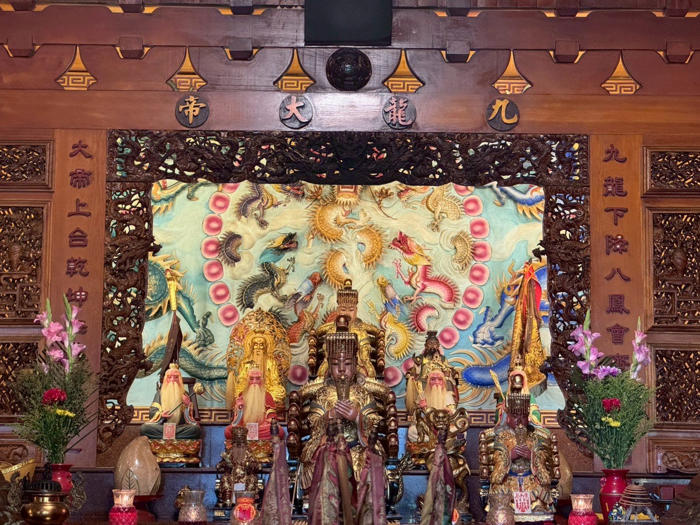
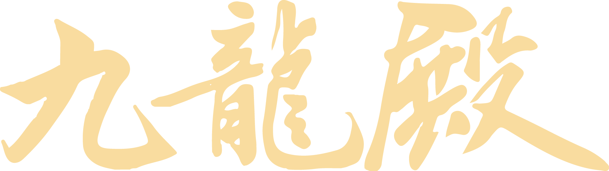
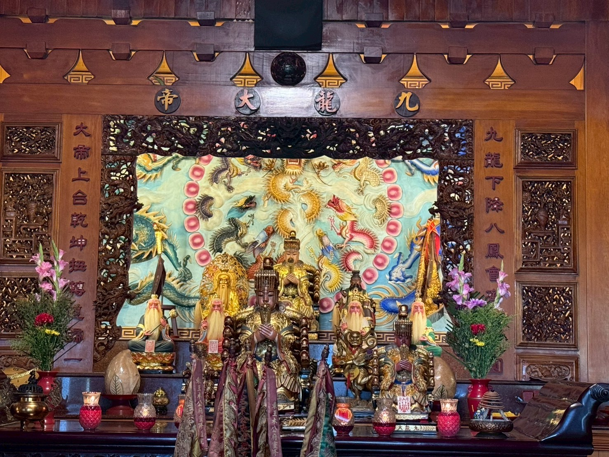
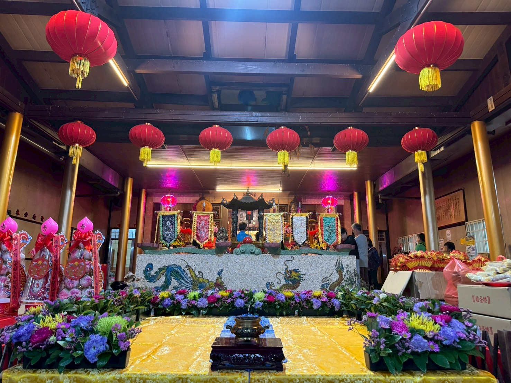
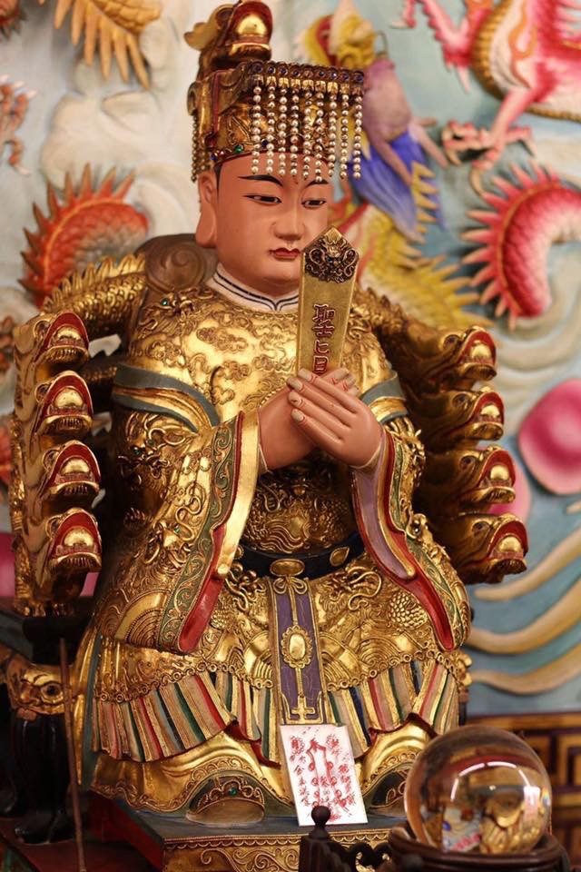
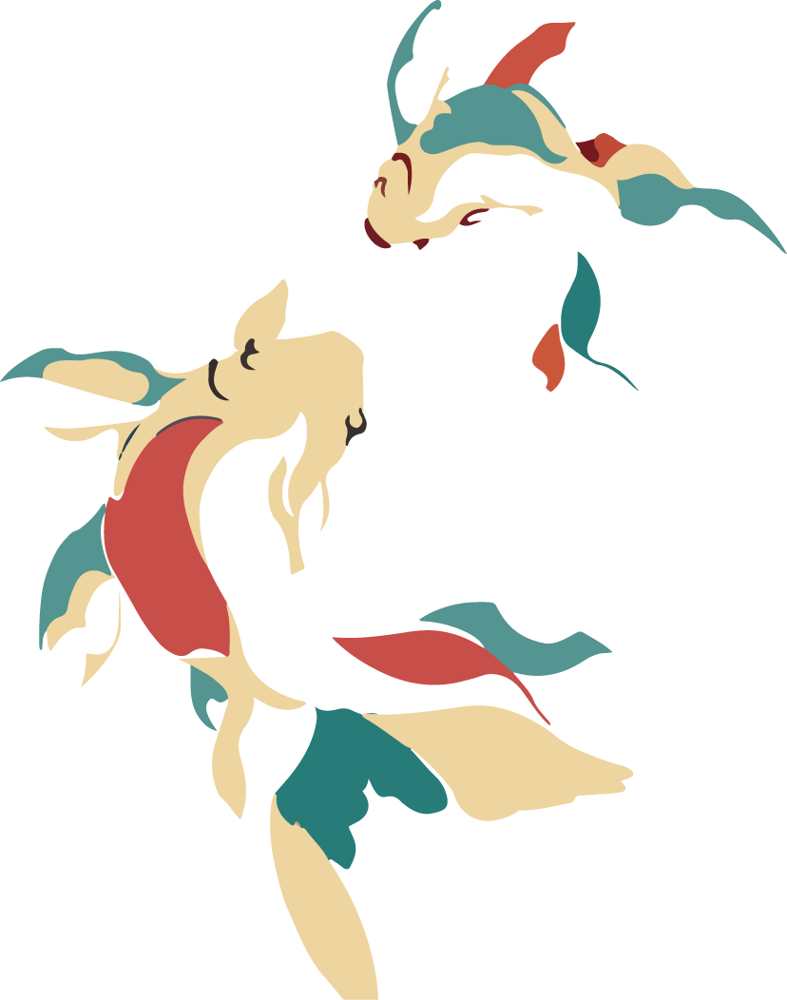

九龍殿 - 彰化縣埤頭鄉宗教聖地
主祀九龍大帝，傳承千年信仰
在靜謐中尋找心靈的平靜
主殿風采
莊嚴神聖的九龍殿內殿景觀
主殿大廳
金碧輝煌的主殿，供奉九龍大帝神像


關於九龍殿
承載著深厚的文化底蘊與虔誠的信仰傳統
九龍殿坐落於彰化縣埤頭鄉，主祀九龍大帝。這是一座融合傳統建築美學與現代精神追求的神聖殿堂，不僅是信眾祈福參拜的聖地，更是文化傳承與心靈淨化的場所。我們秉持「宣揚大道、提倡正信、教化人心」的宗旨，提供祈福平安、心靈導引與事業解惑等多項服務，致力於在現代社會中，為大眾營造一個舒適、安寧的心靈歸宿。

主祀 九龍大帝
九龍下降八鳳齊共收圓，大帝上台乾坤扭轉到歸一。
傳統文化
保存完整的宗教儀式與文化傳統，定期舉辦各類祭典活動
心靈寧靜
提供現代人心靈沉澱的寧靜空間
藝術美學
結合傳統工藝與現代美學設計
活動公告
最新消息與重要通知
奉祀神明
殿內供奉的各路神明護佑眾生
九龍大帝
九龍下降八鳳齊共收圓，大帝上台乾坤扭轉到歸一。
歷史沿革
從九龍八鳳池到埤頭九龍殿的降臨脈絡
起源心法
宣揚大道
提倡正信
教化人心
文化承傳
心靈淨化
九龍殿以現代社會中的正信實踐為本
為信眾安住身心，尋得安寧歸處
弘道濟世
降臨脈絡
庚辰年：雲台太乙宗太清仙境太清宮宮主阮乙峰先進奉旨起造九龍八鳳池，為恭請九龍大帝降臨預作準備。
辛巳年：龍鳳池建造完工並完成開光點眼，九龍八鳳池正式運行，意請九龍大帝降臨雲台。
壬午年二月十八日：九龍大帝下降靈台，九龍大帝代言人林新癸女士初現跡，完成太清宮宮務交接的重要節點。
己丑年十二月初五日：彰化縣埤頭鄉崙腳村九龍殿完成入火安座，承接共同復古收圓之使命。
九龍降世與轉世因緣
手冊記載，天地初判、陰陽兩儀既立之後，東王木公與西主金母互相交炁，炁化九龍九鳳十八子。當今玉皇為長，最小者即為九龍大帝。這層出身，不只說明九龍大帝的尊貴神格，也奠定九龍殿信仰中「東王西王相交炁」的核心源流。
其後，阮乙峰先進奉太聖祖旨意起造九龍八鳳池，於辛巳年完成開光點眼，恭請九龍大帝降臨雲台。九龍八鳳池運行近半年未見動靜，阮先進夜觀星斗，循龍尾之象前往鵝鑾鼻與滿州天地探查、燒化龍尾，靜待天機成熟，終於迎來壬午年九龍大帝下降靈台的重要時刻。
更為傳奇的是，九龍大帝曾於辛丑年十二月十五日，自無極界投胎轉世太極界，降生於彰化縣埤頭鄉崙腳村和平路二十六號石家，取名石永龍，並於壬寅年七月初七日重返天界。這段與埤頭地方血脈相連的轉世因緣，成為九龍殿最鮮明、也最難以取代的信仰特色。
活動祭典
與信眾共同體驗傳統文化之美
服務項目
為信眾提供全方位的宗教服務

九龍殿宗旨
大道無形一念之，莫忘初心未改性，早日入道共收圓。
九龍領聖降埤頭
乾坤演化合為一
一心二性三見知
四維五倫六聖望
七賢八徳九韓蓮
十載碩果存己心
大道無形一念之
莫忘初心未改性早日入道共收圓
宗旨
以宣揚大道、提倡正信、教化人心、端正社會風氣為宗旨。
沿革
九龍大帝於壬午年（2002年，民國91年）二月十八日降臨雲台太清山太清宮，奉東王木公聖旨下中台，為宏揚大道、教化人心，肩負起人之教育的重責大任，選擇由埤頭九龍殿為起點，乃是地方之福、眾生之幸。
殿主蘇坤城先生及副殿主石秀玲女士奉行九龍大帝旨意，於甲申年（2004年）恭請九龍大帝、東王木公、瑤池金母之神尊，暫於家中供奉。因蘇殿主及石副殿主秉持道心，順天應命行天事，弘揚東王木公之精神，傳揚九龍大帝之真道；並在台中市新社區東王木公府靈修道院興建完成後，九龍大帝降旨，需於天運歲次己丑年完成九龍殿臨時廟之動土興建，並於天運歲次己丑年入火安座。
其後，蘇殿主與東王木公府靈修道院院主阮乙峰先進及董事長石麗卿女士，一同尋找九龍殿興建之地。時至動土之際，石陳金菊女士願意捐贈土地，在蘇殿主、阮院主與石董事長共同鑑識風水地理後，確認此地正是九龍殿興建臨時廟之地，並於天運歲次己丑年十月十一日（國曆 2009/11/27）動土興建。
十週年精選輯（天運己亥年）
亙古至今，民以食為天，以農為本；樹立五倫之性，養育心靈良善良知，猶如道本自然，唯一亦猶無。故擇於農業之寶地埤頭，立建寶殿，傳承道真，弘揚真理，點化人心，啟育靈性光明。
十載歲月，點滴於心，無分你我，共護殿境，創立應化盃心靈培育之活動，建造優美舒暢的環境，造福桑梓，促進社會和諧。
聖誕月曆
依農曆換算顯示當年神明祝壽日期，方便信眾提前安排參拜行程
聯絡我們
歡迎蒞臨參訪，感受靈性之美
地址
彰化縣埤頭鄉和平路36號
開放時間
每日 06:00 - 22:00
電話
04-8920407
社群平台
參拜資訊
可自由前來參拜
提供靜謐的環境修養身心靈
來信聯絡
填寫下列表單後，系統會開啟你的電子郵件程式，將內容寄送至九龍殿信箱。